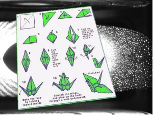

Summon/Fold Fel Crane.

Dit is een extra minion die de warlock kan summonen/creeeren. Om de skill in je spellbook te krijgen moet je wel eerst Brutallus omleggen in Sunwell Plateau. De reden waarom deze vreselijke creatuur in het bezit is van de Tome of the Fel Crane is een curieus verhaal.
Het schijnt dat Brutallus vroeger het huisdier van Kil'Jaeden was (toen nog in een ongemuteerd, minder bizar formaat). Killy had de opdracht gekregen van zijn Eredar warlock leraren om een spreukje te bedenken en hier een essay over te schrijven. De (toen nog) luie en ongeinspireerde Killy schaamde zich echter zo voor het Fel Crane concept dat hij bedacht had dat hij het document door zijn geliefde huisdier Brutallus liet opeten. Zo kon hij claimen bij zijn Eredar leraren dat "zijn hond zijn huiswerk had opgegeten".
Aldus, als je Brutallus nu omlegt heb je een 2% kans dat je bij het ontleden van zijn overblijfselen op de Tome of the Fel Crane stuit. Deze kan je dan leren en met gebruik van een reagent die dropt van mobs in the Sunwell Plateau (Fel Origami) kan je een Fel Crane creeren. Deze minion is een kwetsbaar non-combatisch slaafje die je de volgende buffs geeft:
- +1000 spelldamage
- +1000 spell haste
- Login to post comments
Klein nadeel is dat je nog maar 1 hitpoint hebt en je je niet meer kan bewegen.
Imba?